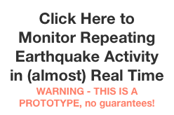
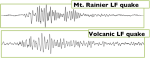

Repeating Earthquakes at Mount Rainier
Over the past few years, we have observed several swarms of small (magnitude <0) near-identical low-frequency (LF) repeating earthquakes (a.k.a. multiplets) at Mount Rainier, an active, glacier-covered stratovolcano in the Cascade volcanic arc. Similar, but smaller, swarms were noted in the 1990’s but now with continuous data and more seismic stations we’re able to make progress in unraveling the source.
A typical “swarm” of multiplets is composed of several distinct but simultaneous multiplet families, contains an average of 1036 events, lasts on average 8.6 days, and peaks at an average of 21 multiplets per hour.
Introduction
Summary: Heavy snowfall triggers shallow repeating earthquakes at Mount Rainier. Though these earthquakes resemble seismicity that can occur due to volcanic activity, their sensitivity to weather indicates a glacial source. We are working to confirm this and better understand the source in order to improve volcano monitoring efforts and understand alpine glacier processes.

Station Map: Permanent seismic network and weather station locations at Mount Rainier. Individual LF multiplets only are observable at RCS, STAR and RCM
Too small to be detected automatically by the regional seismic network, these swarms were first noticed recently on visual webicorder records in 2010 (above) because of the extremely regular repeat times between near-identical events (the little blip that reoccurs every few minutes) . Each line shows half an hour of seismic data.
Note: for two earthquakes to have the same waveform they must:
1) be located in approximately the same place
2) have the same source mechanism
Swarm Characteristics
Regular repetition of the same earthquake
Low Frequency content and Emergent first arrivals
These earthquakes (left) have lower frequency content, with most energy between 1 and 6 Hz, than regular tectonic earthquakes of comparable size (right) and have emergent onsets and unclear phase arrivals making location by traditional methods impossible
Miniscule magnitudes (M<0)
These earthquakes are nearly identical in that they shake the ground nearly the same way every time. Changes in the waveform typically occur gradually. The figure above shows every 70th occurrence of a large family of repeating earthquakes.
Though we cannot compute traditional magnitudes for these tiny earthquakes, the amplitudes of the seismic signals from these events (red) is often smaller than even the tiniest regular earthquakes (Volcano-tectonic) located nearby (black). Note the waveform for the M0.9 earthquake is “clipped” meaning it’s amplitudes exceeded the scale of the seismometer at station RCS.
Nearly identical waveforms
Resemble earthquakes that can occur in conjunction with volcanic activity


The waveforms of these earthquakes resemble low-frequency earthquakes that can occur at volcanoes, like this one recorded at Montserrat.
Their regular recurrence intervals also resemble “drumbeat” earthquakes that can occur prior to and during eruptions.
Weather and Seasonal Correlations
A comprehensive search through the past 10 years of continuous seismic data revealed that these swarms of repeating low-frequency earthquakes are common at Mount Rainier, but escaped detection until recently.
Repeating earthquakes occur almost exclusively in the winter
Swarm occurrence correlates strongly with precipitation
Multiplet detections at station RCS
So what is the source?
The strong correlation with weather and seasonal behavior, combined with their shallow locations high on the mountain, and other behavior such as gradual evolutions in the signals, indicate that the glaciers that cover Mount Rainier are the culprit. However, the exact source mechanism is still not well understood and is the target of some of our current research.
The idea is that some of the glaciers at Mount Rainier are extremely sensitive to changes in load. The additional weight of a few feet of snow triggers a change in their behavior such as a temporary speedup and/or a change from smooth to stick-slip seismic sliding. Subglacial hydrology and water pressure in glacial conduits and cavities could be important.
We believe the repetitive nature of the events may be due to the repeated stick-slip sliding of the glacier over a bump (A) or boulder (B) in its bed. Since the location and mechanism stays the same, the seismic waves take the same path to the seismic station each time, thus resulting in identical earthquakes. The regular recurrence or smoothly varying recurrence intervals could be because the glacier is sliding at a relatively constant velocity and it takes approximately the same amount of time build up enough stress to break the bump each time.
How can we discriminate these harmless glacierquakes from earthquakes that are actually related to volcanic activity?
There are no known clear ways from the waveforms alone to discriminate shallow earthquakes related to volcanic activity from glacial earthquakes, both repeating and non-repeating, on highly glaciated volcanoes. This can make volcano monitoring difficult and is a topic we are currently researching.
As a solution for the particular type of glacial earthquake documented here, we are quantifying what is “normal” harmless glacier seismicity and setting up automatic multiplet detection systems to constantly monitor for repeating earthquakes at Mount Rainier in conjunction with weather conditions that will send alarms when the activity is out of the pre-determined bounds of “normal.” A prototype multiplet monitoring system is already in place.
We intend to expand this to other glacier-covered Cascade volcanoes. Additionally, there are many more active glacier-covered volcanoes in Alaska, such as Mount Redoubt, and Mount Iliamna that could provide a good dataset to further understand and differentiate glacially generated earthquakes from something we need to be concerned about.
For more information see: